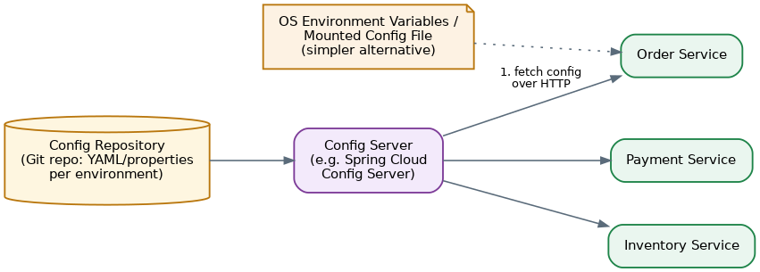
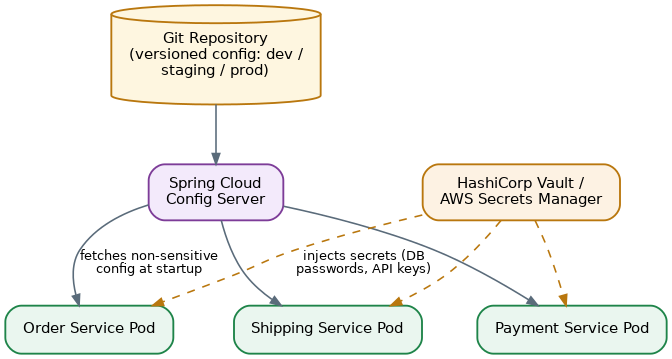

Configuration Externalization Pattern
Table of Contents
Overview
Every application needs configuration — the settings that tell it how to behave and what to connect to: a database's address and password, the URL of another service it talks to, a third-party API key, or a simple feature flag. Configuration Externalization is the discipline of keeping all of these values completely outside the application's own code, so that the exact same packaged build can run correctly in any environment without ever being edited or rebuilt.
The underlying rule is a strict separation of concerns: code describes how the application behaves, while configuration describes where and with what it runs. A useful gut-check is to imagine publishing your source code publicly — if you could do that without leaking a single password or secret, your configuration is properly externalized, because none of that sensitive material ever lived inside the code to begin with. This sounds like a minor detail until a project has more than one environment (dev, QA, staging, production) or more than one running instance of a service — at which point, without externalization, teams inevitably end up hardcoding values, rebuilding software just to point it somewhere else, or accidentally shipping a test credential into production. The pattern is, in fact, one of the foundational ideas behind the well-known "Twelve-Factor App" methodology, which explicitly calls for storing configuration in the environment rather than in the code.
The Problem: Configuration Management in a Microservices Architecture
The problem compounds quickly once an architecture moves from one application to a microservices landscape. Instead of a single set of settings, there may be dozens or hundreds of independent services, each needing its own database credentials, downstream URLs, and feature flags — and each of those values needs to be correct for whatever environment that particular instance happens to be running in, whether that's a developer's laptop, a QA cluster, or production.
If configuration is hardcoded — baked directly into the application or into a config file bundled inside the deployable artifact — then simply promoting that same package from testing to production means either rebuilding it with different values or manually editing files after the fact. Both routes are slow, error-prone, and exactly the kind of manual step that lets a service quietly stay pointed at the test payment provider even after it's deployed to production.
There's also a scaling problem: as the number of services grows, so does the number of configuration values that need to be tracked, updated, and kept consistent. Shared values — a common feature flag, or the address of a central logging service — often need to change across many services simultaneously, and doing that by hand, file by file, service by service, does not scale and invites mistakes. Finally, different environments are supposed to have different values: the QA database genuinely is not the production database, and the test payment account genuinely is not the real one. The application's logic must behave identically everywhere; only its configuration should differ, and it needs to be possible to change that configuration safely, without anyone touching or recompiling the application itself.
Unveiling the Architecture: How Does Configuration Externalization Work?
The general shape of the solution is simple: on startup (and sometimes while already running), a service reads its configuration from an external source instead of from values compiled into its own code. Three common approaches show up in practice, and real systems frequently combine more than one of them.
The simplest approach is environment variables — small named values such as DATABASE_URL or PAYMENT_API_KEY that are set outside the application and read by it at startup. They're extremely portable, work identically regardless of programming language, and fit naturally into containerized platforms like Docker and Kubernetes, though they can become unwieldy once a service accumulates a very large number of settings.
The second approach is external configuration files — YAML, JSON, or properties files that live outside the application's packaged code and are instead mounted in at deploy time, for example as a mounted volume in a Docker container. This keeps configuration organized and human-readable without baking it into the deployable artifact itself.
The third and most powerful approach, and the one that tends to appear once an organization runs many services, is a centralized configuration service — a dedicated system such as Spring Cloud Config Server or a cloud-native option like AWS AppConfig. It stores configuration for every service in one place, often backed by a Git repository for version history, and services query it over the network at startup or even periodically to fetch the latest values. This makes it possible to change a shared setting in exactly one place and have every relevant service pick it up — in some setups, without even needing a restart.

Delving into Code: An Example
The following walks through a simplified illustration of the idea, in the style of a Spring Boot service reading externalized configuration. Rather than hardcoding a downstream URL, the code simply declares that it needs a value and trusts the environment to supply it:
class RegistrationServiceProxy {
// Value is injected from external config, not hardcoded
@Value("${user_registration_url}")
String userRegistrationUrl;
}The actual value is then supplied from outside the application — for example, through an environment variable set in a deployment file such as a Docker Compose file:
# docker-compose.yml (snippet)
services:
web:
image: order-service
environment:
USER_REGISTRATION_URL: http://registration-service/userNotice what the code does not say: it never states what user_registration_url actually is — only that it needs a value called that, and that the value should be supplied. In development, the environment variable might point at a local test server; in production, the exact same container image, completely unmodified, is started with the same environment variable instead pointing at the real registration service.
A Kubernetes-based deployment follows the same idea, typically splitting non-sensitive settings into a ConfigMap and sensitive settings into a Secret:
# Simplified idea, not exact syntax
ConfigMap "order-service-config":
LOG_LEVEL: "info"
FEATURE_FLAG_NEW_CHECKOUT: "true"
Secret "order-service-secrets":
DATABASE_PASSWORD:
# The pod mounts both, and the app reads them
# as environment variables at startup In every one of these examples, the same core idea holds: the application code stays byte-for-byte identical across every environment, and only the externally supplied values change underneath it.
Considerations and Implications
Not all configuration is the same, and treating it as if it were is a common and costly mistake. Ordinary settings — a log level, a feature flag — can generally be stored as plain text, but secrets such as database passwords, API keys, and certificates need stronger protection: encryption at rest, restricted access, and audit logging. This is exactly why many systems keep a dedicated secrets manager — HashiCorp Vault, AWS Secrets Manager, Kubernetes Secrets — separate from where ordinary configuration is stored.
A second consideration is validating configuration at startup. Since the entire point of this pattern is that configuration can vary freely by environment, it becomes just as easy to accidentally deploy a service with a value that's missing or malformed. Good practice is to fail fast: have the service check that every required piece of configuration is present and valid the moment it starts, and refuse to start at all — with a clear error — rather than limping along partially broken.
Dynamic refresh is a related, more advanced consideration. Some centralized configuration systems let a running service pick up configuration changes without a restart, which is powerful for things like flipping a feature flag on the fly — but it also means the application has to be written carefully to tolerate configuration values that might change mid-flight, rather than assuming they're fixed for the lifetime of the process.
Finally, teams need to think about configuration drift and versioning: keeping track of exactly what configuration was in effect at a given moment (invaluable when debugging an incident after the fact), and making sure configuration changes go through the same review and change-tracking discipline as code changes — because a bad configuration change can take down a production system just as thoroughly as a bad code deployment can.
Use Cases and Real-world Examples
Configuration externalization shows up in essentially every modern microservices platform, even though the specific tooling varies from stack to stack:
- Kubernetes ConfigMaps and Secrets — ConfigMaps hold ordinary settings (feature flags, URLs) as key-value pairs that pods mount as environment variables or files; Secrets do the equivalent job for sensitive values like passwords and tokens, under tighter access controls.
- Spring Cloud Config — a dedicated Config Server centralizes configuration for many Spring-based microservices, typically backed by a Git repository, so every service fetches its settings from one governed source instead of configuration files being scattered across dozens of repos.
- HashiCorp Vault and cloud secrets managers (e.g. AWS Secrets Manager) — specialized systems for storing and rotating sensitive credentials, often wired into Kubernetes through tools like the External Secrets Operator, so secrets never need to be hardcoded or manually copy-pasted between environments.
